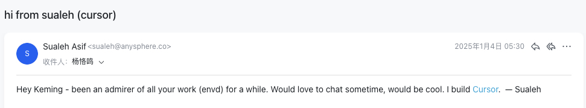

Coding at Agent-Speed
I recently built a security product using Code Agents—an LLM Security Insight platform based on eBPF + PostgreSQL. The tech stack was eclectic: eBPF, React, Go, Docker, Kubernetes, PostgreSQL, DuckDB. I was a complete beginner at React and eBPF, but the project shipped in a month.
VS Code -> Cursor -> Gemini -> VS Code -> Codex -> VS Code -> Claude Code -> OpenCode -> OhMyOpenCode -> VS Code
I'm a long-time VS Code user. First came VS Code Copilot—specify the file, describe the change, generate a patch. Code Assistant is the more accurate term; it's pair programming. In familiar domains, it's genuinely comfortable. Code completion + pair programming is how programming should be.
Around March-April 2025, I tried Cursor. It's forked from VS Code, but details made it feel different. Multi-file editing and Agent mode. Many people scoffed at first—used to pair programming, multi-file editing extended review time, and model-generated code wasn't reliable enough to approve without review. But Cursor dared to be first. With Claude Sonnet's capabilities, Cursor went wild.
Here's the fun part: in early 2025, Cursor co-founder Sualeh Asif emailed our team engineer keming about our reproducible dev infra tool (envd). Cursor had already foreseen consistency issues in large-scale Agent deployments. They used vector databases + Turbopuffer for code search in multi-tenant scenarios—the same approach we took with VectorChord. But after their user base exploded and free quotas got slashed, I couldn't renew without a credit card, so I moved on.

Then came Gemini CLI. Google's resources and Infra were impressive—free, powerful tokens attracted tons of users including me. But I was busy with VectorChord Cloud, so I only used it for small fixes and tests. Human context worked well, but still no Agent feeling—just pair programming.
After hitting Gemini's quota limit, I went back to VS Code. GitHub's free Copilot + VS Code Agent mode + multi-vendor support (OpenAI, Claude, Google) with Enterprise quota was enough. But I preferred multi-file editing, keeping every line of code in check.
Claude Code finally gave me the real Agent experience. Leap in model capability meant better code and design docs. Smooth Plan/Auto/Edit mode switching let me build with planning and rhythm.
Claude's region restrictions were brutal though—I had to get tokens through special channels. Then GLM came out, people said its coding and tool-calling were solid. They were right.
Later, I saw good buzz about OpenCode on Twitter, tried it briefly—not bad. Then OhMyOpenCode plugin went viral on X. For users with multiple vendor models, it's genuinely useful—seamless model switching, unified workflow. But models iterate fast, plugins update constantly, managing subscriptions and tracking changes—it's exhausting.
So why back to VS Code? I've always used VS Code Remote to connect to my dev machine. Claude Code and Codex have official VS Code extensions, and I often need to feed images to the Agent. Conductor and similar Orchestration tools? Didn't use them much.
My Choices
Tool Choices
| Scenario | Recommendation |
|---|---|
| Multi-vendor model switching | OhMyOpenCode |
| Single-model deep work | VS Code + Claude Code / Codex Extension |
Model Choices
| Dimension | Recommendation |
|---|---|
| Aesthetics | GPT-5.2-Codex > Gemini-3 Pro > Claude Opus 4.5 » GLM 4.7 |
| Planning | Claude Opus 4.5, leagues ahead |
| Coding | Claude Sonnet 4.5, GLM 4.7 |
| Debugging | Claude Opus/Sonnet 4.5, GLM 4.7 |
Multi-model collaboration is the future. Different models excel in different areas, combining them works best.

How I Work
For the project mentioned above, I did it the Agent way:
1. Maintain Project Context
|
|
All research, design, and utility code go here. Agents read directly—huge efficiency win.
2. Global Context
Following Xuanwo's approach, my Global Context is agents.md—defining Agent behavior, constraints, and Best Practices. Shared across all projects.
3. Design First Polish design docs with the Agent, lock in tech stack and architecture. The design doc is the Agent's manual—clearer is better.
4. Validate Before Build Have the Agent write verification code first. Before committing to a PostgreSQL Schema, I had the Agent generate DDL, then ran a Demo to validate.
5. Full Implementation Once validated, Agent implements everything. There are cases the Agent can't handle—eBPF kernel compatibility, for example. For those, I switch to Claude Sonnet 4.5 with full context to Debug directly. Efficient.
Git Worktree is my safety net. Agents mess around in branches, main stays clean. But database schema changes are painful—Docker PG can't do concurrent schema changes, so it's serial.
I used to worry about Git—fear the Agent would delete fine-tuned code. But as Agent quality improved, that mental burden faded.
Thoughts
Fork is a Must-Have
- Code/File Level: Solved by Git.
- Runtime Level: Docker/envd solved personal use cases, but large-scale Agent scheduling has no perfect solution yet. Unikernel might work, but Firecracker isn't fast or mature enough.
- Database Level: ACID makes forking hard. Distributed databases mean data redundancy and consistency issues when forking. PostgreSQL's monolithic nature is an advantage. PITR + JuiceFS Snapshot enables PG forks—tools like piglet help.
Multi-Model Collaboration is the Future
Skill Best Practices + MCP Boost Productivity
Context/Memory Evolution and Sharing is the Battlefield
All in AI
Next Step
- Upgrade dev machine Mac
- Full automation: DNS, domain registration, Agent Notification
- Better Global Context + Memory management
- Large-scale Agent Runtime Infra research